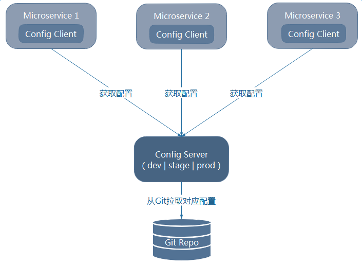

<!DOCTYPE HTML>
<html lang="zh-CN">
<head><meta name="generator" content="Hexo 3.8.0">
    <!--Setting-->
    <meta charset="UTF-8">
    <meta name="viewport" content="width=device-width, user-scalable=no, initial-scale=1.0, maximum-scale=1.0, minimum-scale=1.0">
    <meta http-equiv="X-UA-Compatible" content="IE=Edge,chrome=1">
    <meta http-equiv="Cache-Control" content="no-siteapp">
    <meta http-equiv="Cache-Control" content="no-transform">
    <meta http-equiv="pragma" content="no-cache">
    <meta http-equiv="Cache-Control" content="no-cache, must-revalidate">
    <meta http-equiv="expires" content="Mon Apr 06 2020 02:12:39 GMT+0800 (CST)">
    <meta name="renderer" content="webkit|ie-comp|ie-stand">
    <meta name="apple-mobile-web-app-capable" content="张万众的博客 - 关注Spring Cloud、Docker">
    <meta name="apple-mobile-web-app-status-bar-style" content="black">
    <meta name="format-detection" content="telephone=no,email=no,adress=no">
    <meta name="browsermode" content="application">
    <meta name="screen-orientation" content="portrait">
    <meta name="theme-version" content="1.2.3">
    <meta name="root" content="/">
    
    <!--SEO-->

    <meta name="keywords" content="Spring Cloud,Spring Cloud Config,配置中心">


    <meta name="description" content="经过前文讲解，至此，微服务架构已经日趋完善——现在已经可以做一个大型的应用了！然而，随着项目的迭代，微服务数目往往与日俱增，如何高效地管理配置成为我们必须解决的问题。本节来讨论如何使用Spring Cloud Config管理配置。
为什么要使用配置中心
集中管理配置。一个使用微服务架构的应用...">


<meta name="robots" content="all">
<meta name="google" content="all">
<meta name="googlebot" content="all">
<meta name="verify" content="all">
    <!--Title-->


<title>跟我学Spring Cloud（Finchley版）-19-配置中心-Spring Cloud Config | 张万众的博客 - 关注Spring Cloud、Docker</title>


    <link rel="alternate" href="../../atom.html" title="张万众的博客 - 关注Spring Cloud、Docker" type="application/atom+xml">


    

    


<link rel="stylesheet" href="../../static/css/bootstrap.min-271a649e0635d6fa1b.css">
<link rel="stylesheet" href="../../static/css/font-awesome.min-ac2bebcf7fb5b26.css">
<link rel="stylesheet" href="../../static/css/style-6f3c140f6eee20e6591da00ec0.css">


    


    <script>
        var _hmt = _hmt || [];
        (function() {
            var hm = document.createElement("script");
            hm.src = "https://hm.baidu.com/hm.js?13766878cde148282622871dd245a973";
            var s = document.getElementsByTagName("script")[0];
            s.parentNode.insertBefore(hm, s);
        })();
    </script>


    

</head>

</html>
<!--[if lte IE 8]>
<style>
    html{ font-size: 1em }
</style>
<![endif]-->
<!--[if lte IE 9]>
<div style="ie">你使用的浏览器版本过低，为了你更好的阅读体验，请更新浏览器的版本或者使用其他现代浏览器，比如Chrome、Firefox、Safari等。</div>
<![endif]-->

<body>
    
    <nav class="main-navigation">
    <div class="container">
        <div class="row clearfix">
            <div class="col-md-12 column">
                <nav class="navbar navbar-default" style="background-color:#fff;border:0;margin-bottom:0" role="navigation">
                    <div class="navbar-header">
                        <button type="button" class="navbar-toggle" data-toggle="collapse" data-target="#navbar-collapse-1">
                            <span class="sr-only">切</span>
                            <span class="icon-bar"></span>
                            <span class="icon-bar"></span>
                            <span class="icon-bar"></span>
                        </button>
                        <a class="logo" href="../../index.html">
                            张万众的博客
                        </a>
                    </div>

                    <div class="collapse navbar-collapse" style="border:0;" id="navbar-collapse-1">
                        <ul class="nav navbar-nav">
                            
                                
                                    <li>
                                        <a href="../../about.html" target="_blank">
                                            <i class="fa fa-user"></i>
                                            关于我
                                        </a>
                                    </li>
                                
                            
                                
                                    <li>
                                        <a href="../../archives.html" target="_blank">
                                            <i class="fa fa-archive"></i>
                                            归档
                                        </a>
                                    </li>
                                
                            
                                
                                    <li class="dropdown">
                                        <a href="#" class="dropdown-toggle" data-toggle="dropdown" data-hover="dropdown">
                                            <i class="fa fa-fire"></i>
                                            系列课程
                                            <strong class="caret"></strong>
                                        </a>
                                        <ul class="dropdown-menu">
                                            
                                                <li>
                                                    <a href="../../docker/00-docker-lession-index.html" target="_blank">
                                                        <i class="fa "></i>
                                                        Docker系列教程
                                                    </a>
                                                </li>
                                            
                                                <li>
                                                    <a href="../spring-cloud-index.html" target="_blank">
                                                        <i class="fa "></i>
                                                        Spring Cloud系列教程
                                                    </a>
                                                </li>
                                            
                                                <li>
                                                    <a href="../../spring-boot/spring-boot-index.html" target="_blank">
                                                        <i class="fa "></i>
                                                        Spring Boot系列教程
                                                    </a>
                                                </li>
                                            
                                        </ul>
                                    </li>
                                
                            
                                
                                    <li class="dropdown">
                                        <a href="#" class="dropdown-toggle" data-toggle="dropdown" data-hover="dropdown">
                                            <i class="fa fa-book"></i>
                                            开源书
                                            <strong class="caret"></strong>
                                        </a>
                                        <ul class="dropdown-menu">
                                            
                                                <li>
                                                    <a href="../../books/rocketmq.html" target="_blank">
                                                        <i class="fa fa-rocket"></i>
                                                        RocketMQ开发者指南
                                                    </a>
                                                </li>
                                            
                                                <li>
                                                    <a href="../../books/skywalking.html" target="_blank">
                                                        <i class="fa fa-skyatlas"></i>
                                                        Skywalking 6.2.0中文文档
                                                    </a>
                                                </li>
                                            
                                        </ul>
                                    </li>
                                
                            
                                
                                    <li class="dropdown">
                                        <a href="#" class="dropdown-toggle" data-toggle="dropdown" data-hover="dropdown">
                                            <i class="fa fa-cog"></i>
                                            工具
                                            <strong class="caret"></strong>
                                        </a>
                                        <ul class="dropdown-menu">
                                            
                                                <li>
                                                    <a href="../../tools/markdown2.html" target="_blank">
                                                        <i class="fa "></i>
                                                        微信排版工具2.0
                                                    </a>
                                                </li>
                                            
                                        </ul>
                                    </li>
                                
                            
                        </ul>
                        
                            <form id="search-form" class="navbar-form navbar-right">
                                <div class="form-group input-group">
                                    <input type="text" id="local-search-input" class="form-control" placeholder="搜我...">
                                    <span class="input-group-btn">
                                        <a class="btn btn-default">
                                            <i class="fa fa-search"></i>
                                        </a>
                                    </span>
                                </div>
                                <div id="local-search-result" class="local-search-result-cls"></div>
                            </form>
                        
                    </div>
                </nav>
            </div>
        </div>
    </div>
</nav>

    <a href="javascript:;" target="_blank">
        
    </a>


    <section class="content-wrap">
        <div class="container">
            <div class="row">
                <main class="col-md-8 main-content m-post">
                    

<p id="process"></p>
<article class="post">
    <div class="post-head">
        <h1 id="跟我学Spring Cloud（Finchley版）-19-配置中心-Spring Cloud Config">
            
                跟我学Spring Cloud（Finchley版）-19-配置中心-Spring Cloud Config
            
        </h1>
        <div class="post-meta">
    
        <span class="categories-meta fa-wrap">
            <i class="fa fa-folder-open-o"></i>
            <a class="category-link" href="javascript:;">Spring Cloud</a>
        </span>
    

    
        <span class="fa-wrap">
            <i class="fa fa-tags"></i>
            <span class="tags-meta">
                
                    <a class="tag-link" href="javascript:;">Spring Cloud</a> <a class="tag-link" href="javascript:;">Spring Cloud Config</a> <a class="tag-link" href="../../tags/配置中心/index.html">配置中心</a>
                
            </span>
        </span>
    

    
        
        <span class="fa-wrap">
            <i class="fa fa-clock-o"></i>
            <span class="date-meta">2019/01/28</span>
        </span>
        
            <span class="fa-wrap">
                <i class="fa fa-eye"></i>
                <span id="busuanzi_value_page_pv"></span>
            </span>
        
    
</div>
        
        
    </div>
    
    <div class="post-body post-content" id="post-content">
        
    <div class="toc-article">
        <strong>
            目录
        </strong>
        <div class="toc-content">
            <ol class="toc"><li class="toc-item toc-level-2"><a class="toc-link" href="#为什么要使用配置中心"><span class="toc-text">为什么要使用配置中心</span></a></li><li class="toc-item toc-level-2"><a class="toc-link" href="#Spring-Cloud-Config简介"><span class="toc-text">Spring Cloud Config简介</span></a></li><li class="toc-item toc-level-2"><a class="toc-link" href="#编写Config-Server"><span class="toc-text">编写Config Server</span></a><ol class="toc-child"><li class="toc-item toc-level-3"><a class="toc-link" href="#示例"><span class="toc-text">示例</span></a></li><li class="toc-item toc-level-3"><a class="toc-link" href="#路径规则"><span class="toc-text">路径规则</span></a></li><li class="toc-item toc-level-3"><a class="toc-link" href="#测试"><span class="toc-text">测试</span></a></li></ol></li><li class="toc-item toc-level-2"><a class="toc-link" href="#集成Config-Client"><span class="toc-text">集成Config Client</span></a><ol class="toc-child"><li class="toc-item toc-level-3"><a class="toc-link" href="#编码"><span class="toc-text">编码</span></a></li><li class="toc-item toc-level-3"><a class="toc-link" href="#测试-1"><span class="toc-text">测试</span></a></li></ol></li><li class="toc-item toc-level-2"><a class="toc-link" href="#配套代码"><span class="toc-text">配套代码</span></a></li></ol>
        </div>
    </div>


        <p>经过前文讲解，至此，微服务架构已经日趋完善——现在已经可以做一个大型的应用了！然而，随着项目的迭代，微服务数目往往与日俱增，如何高效地管理配置成为我们必须解决的问题。本节来讨论如何使用Spring Cloud Config管理配置。</p>
<h2 id="为什么要使用配置中心"><a href="#为什么要使用配置中心" class="headerlink" title="为什么要使用配置中心"></a>为什么要使用配置中心</h2><ul>
<li>集中管理配置。一个使用微服务架构的应用系统可能会包含成百上千个微服务，因此集中管理配置是非常有必要的；</li>
<li>不同环境，不同配置。例如，数据源配置在不同的环境（开发、测试、预发布、生产等）中是不同的；</li>
<li>运行期间可动态调整。例如，我们可根据各个微服务的负载情况，动态调整数据源连接池大小或熔断阈值，并且在调整配置时不停止微服务；</li>
<li>配置修改后可自动更新。如配置内容发生变化，微服务能够自动更新配置。</li>
</ul>
<h2 id="Spring-Cloud-Config简介"><a href="#Spring-Cloud-Config简介" class="headerlink" title="Spring Cloud Config简介"></a>Spring Cloud Config简介</h2><p>Spring Cloud Config为分布式系统外部化配置提供了服务器端和客户端的支持，它包括Config Server和Config Client两部分。由于Config Server和Config Client都实现了对Spring Environment和PropertySource抽象的映射，因此，Spring Cloud Config非常适合Spring应用程序，当然也可与任何其他语言编写的应用程序配合使用。</p>
<p>Config Server是一个可横向扩展、集中式的配置服务器，它用于集中管理应用程序各个环境下的配置，默认使用Git存储配置内容（也可使用Subversion、MySQL、本地文件系统或Vault存储配置，本博客以Git为例进行讲解），因此可以很方便地实现对配置的版本控制与内容审计。</p>
<p>Config Client是Config Server的客户端，用于操作存储在Config Server中的配置属性。引入Spring Cloud Config后的架构如下：</p>
<p></p>
<p><strong>TIPS</strong></p>
<p>Spring Cloud Config的GitHub：<a href="javascript:;" target="_blank" rel="noopener">https://github.com/spring-cloud/spring-cloud-config</a></p>
<h2 id="编写Config-Server"><a href="#编写Config-Server" class="headerlink" title="编写Config Server"></a>编写Config Server</h2><h3 id="示例"><a href="#示例" class="headerlink" title="示例"></a>示例</h3><ul>
<li><p>加依赖</p>
<figure class="highlight xml"><table><tr><td class="gutter"><pre><span class="line">1</span><br><span class="line">2</span><br><span class="line">3</span><br><span class="line">4</span><br></pre></td><td class="code"><pre><span class="line"><span class="tag">&lt;<span class="name">dependency</span>&gt;</span></span><br><span class="line">  <span class="tag">&lt;<span class="name">groupId</span>&gt;</span>org.springframework.cloud<span class="tag">&lt;/<span class="name">groupId</span>&gt;</span></span><br><span class="line">  <span class="tag">&lt;<span class="name">artifactId</span>&gt;</span>spring-cloud-config-server<span class="tag">&lt;/<span class="name">artifactId</span>&gt;</span></span><br><span class="line"><span class="tag">&lt;/<span class="name">dependency</span>&gt;</span></span><br></pre></td></tr></table></figure>
</li>
<li><p>加注解：<code>@EnableConfigServer</code> </p>
</li>
<li><p>写配置：</p>
<figure class="highlight yaml"><table><tr><td class="gutter"><pre><span class="line">1</span><br><span class="line">2</span><br><span class="line">3</span><br><span class="line">4</span><br><span class="line">5</span><br><span class="line">6</span><br><span class="line">7</span><br><span class="line">8</span><br><span class="line">9</span><br><span class="line">10</span><br><span class="line">11</span><br><span class="line">12</span><br><span class="line">13</span><br><span class="line">14</span><br><span class="line">15</span><br></pre></td><td class="code"><pre><span class="line"><span class="attr">server:</span></span><br><span class="line"><span class="attr">  port:</span> <span class="number">8080</span></span><br><span class="line"><span class="attr">spring:</span></span><br><span class="line"><span class="attr">  application:</span></span><br><span class="line"><span class="attr">    name:</span> <span class="string">microservice-config-server</span></span><br><span class="line"><span class="attr">  cloud:</span></span><br><span class="line"><span class="attr">    config:</span></span><br><span class="line"><span class="attr">      server:</span></span><br><span class="line"><span class="attr">        git:</span></span><br><span class="line">          <span class="comment"># Git仓库地址</span></span><br><span class="line"><span class="attr">          uri:</span> <span class="attr">https://git.oschina.net/itmuch/spring-cloud-config-repo.git</span></span><br><span class="line">          <span class="comment"># Git仓库账号</span></span><br><span class="line"><span class="attr">          username:</span></span><br><span class="line">          <span class="comment"># Git仓库密码</span></span><br><span class="line"><span class="attr">          password:</span></span><br></pre></td></tr></table></figure>
</li>
</ul>
<h3 id="路径规则"><a href="#路径规则" class="headerlink" title="路径规则"></a>路径规则</h3><p>Spring Cloud Config Server提供了RESTful API，可用来访问存放在Git仓库中的配置文件。</p>
<figure class="highlight plain"><table><tr><td class="gutter"><pre><span class="line">1</span><br><span class="line">2</span><br><span class="line">3</span><br><span class="line">4</span><br><span class="line">5</span><br></pre></td><td class="code"><pre><span class="line">/&#123;application&#125;/&#123;profile&#125;[/&#123;label&#125;]</span><br><span class="line">/&#123;application&#125;-&#123;profile&#125;.yml</span><br><span class="line">/&#123;label&#125;/&#123;application&#125;-&#123;profile&#125;.yml</span><br><span class="line">/&#123;application&#125;-&#123;profile&#125;.properties</span><br><span class="line">/&#123;label&#125;/&#123;application&#125;-&#123;profile&#125;.properties</span><br></pre></td></tr></table></figure>
<p>其中的{appliation}、{profile}、{label} 都是占位符。</p>
<p><strong>TIPS</strong></p>
<p>事实上，可使用Spring Cloud Config实现配置的“继承”与“组合”，举个例子——</p>
<p>假设有一个应用：<code>microservice-foo</code> ，其profile是dev，那么其实Spring Cloud Config会查找如下几个文件：</p>
<ul>
<li><p><code>microservice-foo-dev.yml</code></p>
</li>
<li><p><code>microservice-foo.yml</code> </p>
</li>
<li><code>application-dev.yml</code></li>
<li><code>application.yml</code> </li>
</ul>
<p>对于相同属性的配置，从上至下优先级逐渐递减；最终获得的配置属性是四个文件的组合。由此，不难分析，可如下规划几个配置文件：</p>
<ul>
<li><code>microservice-foo-dev.yml</code> 作为指定应用在指定profile下的配置文件</li>
<li><code>microservice-foo.yml</code> 作为制定应用在任何profile下都通用的配置文件</li>
<li><code>application-dev.yml</code> 作为所有应用在指定profile下的配置文件</li>
<li><code>application.yml</code> 作为所有应用在任何profile下都通用的配置文件</li>
</ul>
<h3 id="测试"><a href="#测试" class="headerlink" title="测试"></a>测试</h3><ul>
<li>访问<code>http://localhost:8080/microservice-foo-dev.yml</code> 可访问到Git仓库的<code>microservice-foo-dev.properties</code> 并组合<code>application.properties</code>。</li>
</ul>
<h2 id="集成Config-Client"><a href="#集成Config-Client" class="headerlink" title="集成Config Client"></a>集成Config Client</h2><h3 id="编码"><a href="#编码" class="headerlink" title="编码"></a>编码</h3><ul>
<li><p>加依赖</p>
<figure class="highlight xml"><table><tr><td class="gutter"><pre><span class="line">1</span><br><span class="line">2</span><br><span class="line">3</span><br><span class="line">4</span><br></pre></td><td class="code"><pre><span class="line"><span class="tag">&lt;<span class="name">dependency</span>&gt;</span></span><br><span class="line">  <span class="tag">&lt;<span class="name">groupId</span>&gt;</span>org.springframework.cloud<span class="tag">&lt;/<span class="name">groupId</span>&gt;</span></span><br><span class="line">  <span class="tag">&lt;<span class="name">artifactId</span>&gt;</span>spring-cloud-starter-config<span class="tag">&lt;/<span class="name">artifactId</span>&gt;</span></span><br><span class="line"><span class="tag">&lt;/<span class="name">dependency</span>&gt;</span></span><br></pre></td></tr></table></figure>
</li>
<li><p>加配置：applicaiton.yml</p>
<figure class="highlight yaml"><table><tr><td class="gutter"><pre><span class="line">1</span><br><span class="line">2</span><br></pre></td><td class="code"><pre><span class="line"><span class="attr">server:</span></span><br><span class="line"><span class="attr">  port:</span> <span class="number">8081</span></span><br></pre></td></tr></table></figure>
</li>
<li><p>加配置：bootstrap.yml</p>
<figure class="highlight yaml"><table><tr><td class="gutter"><pre><span class="line">1</span><br><span class="line">2</span><br><span class="line">3</span><br><span class="line">4</span><br><span class="line">5</span><br><span class="line">6</span><br><span class="line">7</span><br><span class="line">8</span><br></pre></td><td class="code"><pre><span class="line"><span class="attr">spring:</span></span><br><span class="line"><span class="attr">  application:</span></span><br><span class="line"><span class="attr">    name:</span> <span class="string">microservice-foo</span>    <span class="comment"># 对应config server所获取的配置文件的&#123;application&#125;</span></span><br><span class="line"><span class="attr">  cloud:</span></span><br><span class="line"><span class="attr">    config:</span></span><br><span class="line"><span class="attr">      uri:</span> <span class="attr">http://localhost:8080/</span></span><br><span class="line"><span class="attr">      profile:</span> <span class="string">dev</span>            <span class="comment"># profile对应config server所获取的配置文件中的&#123;profile&#125; </span></span><br><span class="line"><span class="attr">      label:</span> <span class="string">master</span>           <span class="comment"># 指定Git仓库的分支，对应config server所获取的配置文件的&#123;label&#125;</span></span><br></pre></td></tr></table></figure>
<p>其中：</p>
<p>spring.application.name：对应Config Server所获取的配置文件中的{application} ；</p>
<p>spring.cloud.config.uri：指定Config Server的地址，默认是<a href="javascript:;" target="_blank" rel="noopener">http://localhost:8888</a> ；</p>
<p>spring.cloud.config.profile：profile对应Config Server所获取的配置文件中的{profile} ；</p>
<p>spring.cloud.config.label：指定Git仓库的分支，对应Config Server所获取配置文件的{label}。</p>
<p>值得注意的是，以上属性应配置在bootstrap.yml，而不是application.yml中。如果配置在application.yml中，该部分配置就不能正常工作。例如，Config Client会连接spring.cloud.config.uri的默认值 <code>http://localhost:8888</code> ，而并非我们配置的 <code>http://localhost:8080/</code> 。</p>
<p>Spring Cloud有一个“引导上下文”的概念，这是主应用程序上下文（Application Context）的父上下文。引导上下文负责从配置服务器加载配置属性，以及解密外部配置文件中的属性。和主应用程序加载<code>application.*</code> (yml或properties)中的属性不同，引导上下文加载<code>bootstrap.*</code> 中的属性。配置在<code>bootstrap.*</code> 中的属性有更高的优先级，因此默认情况下它们不能被本地配置覆盖。</p>
</li>
<li><p>写代码</p>
<figure class="highlight java"><table><tr><td class="gutter"><pre><span class="line">1</span><br><span class="line">2</span><br><span class="line">3</span><br><span class="line">4</span><br><span class="line">5</span><br><span class="line">6</span><br><span class="line">7</span><br><span class="line">8</span><br><span class="line">9</span><br><span class="line">10</span><br></pre></td><td class="code"><pre><span class="line"><span class="meta">@RestController</span></span><br><span class="line"><span class="keyword">public</span> <span class="class"><span class="keyword">class</span> <span class="title">ConfigClientController</span> </span>&#123;</span><br><span class="line">  <span class="meta">@Value</span>(<span class="string">"$&#123;profile&#125;"</span>)</span><br><span class="line">  <span class="keyword">private</span> String profile;</span><br><span class="line"></span><br><span class="line">  <span class="meta">@GetMapping</span>(<span class="string">"/profile"</span>)</span><br><span class="line">  <span class="function"><span class="keyword">public</span> String <span class="title">hello</span><span class="params">()</span> </span>&#123;</span><br><span class="line">    <span class="keyword">return</span> <span class="keyword">this</span>.profile;</span><br><span class="line">  &#125;</span><br><span class="line">&#125;</span><br></pre></td></tr></table></figure>
</li>
</ul>
<h3 id="测试-1"><a href="#测试-1" class="headerlink" title="测试"></a>测试</h3><p>访问<code>http://localhost:8081/profile</code> 可返回Git仓库中的配置属性。</p>
<h2 id="配套代码"><a href="#配套代码" class="headerlink" title="配套代码"></a>配套代码</h2><p>Config Server</p>
<ul>
<li>GitHub：<a href="javascript:;" target="_blank" rel="noopener">https://github.com/eacdy/spring-cloud-study/tree/master/2018-Finchley/microservice-config-server</a></li>
<li>Gitee：<a href="javascript:;" target="_blank" rel="noopener">https://gitee.com/itmuch/spring-cloud-study/tree/master/2018-Finchley/microservice-config-server</a></li>
</ul>
<p>Config Client</p>
<ul>
<li>GitHub：<a href="javascript:;" target="_blank" rel="noopener">https://github.com/eacdy/spring-cloud-study/tree/master/2018-Finchley/microservice-config-client</a></li>
<li>Gitee：<a href="javascript:;" target="_blank" rel="noopener">https://gitee.com/itmuch/spring-cloud-study/tree/master/2018-Finchley/microservice-config-client</a></li>
</ul>

        <h2>相关文章</h2><ul><li><a href="../config-server-encrypt-decrypt/index.html">Config Server——配置内容的加密与解密</a></li><li><a href="../finchley-20/index.html">跟我学Spring Cloud（Finchley版）-20-Spring Cloud Config-Git仓库配置详解</a></li><li><a href="../finchley-21/index.html">跟我学Spring Cloud（Finchley版）-21-Spring Cloud Config-配置属性加解密</a></li><li><a href="../finchley-22/index.html">跟我学Spring Cloud（Finchley版）-22-Spring Cloud Config-配置动态刷新</a></li><li><a href="../finchley-23/index.html">跟我学Spring Cloud（Finchley版）-23-Spring Cloud Config高可用</a></li></ul>
    </div>
    
    <div class="post-footer">
        <div class="col-sm-10">
            <div>
                <b>本文链接</b>：<a href="" target="_blank">跟我学Spring Cloud（Finchley版）-19-配置中心-Spring Cloud Config</a>
            </div>
            <div>
                
                    转载声明：本博客由张万众创作，采用 <a href="javascript:;" target="_blank"> CC BY 3.0 CN </a> 许可协议。可自由转载、引用，但需署名作者且注明文章出处。如转载至微信公众号，请在文末添加作者公众号二维码。
                
            </div>
            <div>
                
            </div>
        </div>
        <div class="col-sm-2">
            
        </div>
    </div>
</article>

<div class="article-nav prev-next-wrap clearfix">
    
        <a target="_blank" href="../finchley-20/index.html" class="pre-post btn btn-default" title="跟我学Spring Cloud（Finchley版）-20-Spring Cloud Config-Git仓库配置详解">
            <i class="fa fa-angle-left fa-fw"></i><span class="hidden-lg">上一篇</span>
            <span class="hidden-xs">跟我学Spring Cloud（Finchley版）-20-Spring Cloud Config-Git仓库配置详解</span>
        </a>
    
    
        <a target="_blank" href="../../spring-cloud-sum/spring-cloud-config-serer-compare/index.html" class="next-post btn btn-default" title="Spring Cloud生态的配置服务器最全对比贴">
            <span class="hidden-lg">下一篇</span>
            <span class="hidden-xs">Spring Cloud生态的配置服务器最全对比贴</span><i class="fa fa-angle-right fa-fw"></i>
        </a>
    
</div>


    <div id="comments">
        
   <p>评论系统未开启，无法评论！</p>

    </div>


                </main>
                
    <aside class="col-md-4 sidebar">
        
        <div class="widget about-me">
    <div class="row">
        <div class="col-md-5">
            
        </div>
        <div class="col-md-7">
            <a class="series-a" href="javascript:void(0)">公众号</a>
            <ul>
                <li>• 技术干货推送</li>
                <li>• 免费资料领取</li>
                <li><b>• 扫码领取更多惊喜</b></li>
            </ul>
        </div>
    </div>
    
        <div class="row">
            <div class="col-md-5">
                
            </div>
            <div class="col-md-7">
                <a class="series-a" href="javascript:void(0)">小程序</a>
                <ul>
                    <li>• 原创笔记</li>
                    <li>• 独家心法</li>
                    <li><b>• 扫码领取</b></li>
                </ul>
            </div>
        </div>
    
</div>


        
        
    <div class="ad">
        <div class="row">
            <div class="col-md-12">
                <a href="javascript:;" rel="nofollow" target="_blank">
                    
                </a>
            </div>
        </div>
    </div>


        
        <div class="widget">
    <div class="row">
        <div class="col-md-3">
            
        </div>
        <div class="col-md-9">
            <a class="series-a" target="_blank" href="../spring-cloud-index.html">Spring Cloud系列教程</a>
            <p>全面、通俗易懂的Spring Cloud教程</p>
        </div>
    </div>
    <div class="row">
        <div class="col-md-3">
            
        </div>
        <div class="col-md-9">
            <a class="series-a" target="_blank" href="javascript:;">Spring Cloud Alibaba视频教程</a>
            <p>全网唯一，你值得拥有</p>
        </div>
    </div>
    <div class="row">
        <div class="col-md-3">
            
        </div>
        <div class="col-md-9">
            <a class="series-a" target="_blank" href="../../docker/00-docker-lession-index.html">Docker系列教程</a>
            <p>Docker系列</p>
        </div>
    </div>
    <div class="row">
        <div class="col-md-3">
            
        </div>
        <div class="col-md-9">
            <a class="series-a" target="_blank" href="../../spring-boot/spring-boot-index.html">Spring Boot系列教程</a>
            <p>Boot是基石...</p>
        </div>
    </div>
</div>


        
        
    <div class="widget">
        <h3 class="title">分类</h3>
        <ul class="category-list"><li class="category-list-item"><a class="category-list-link" href="javascript:;"><i class="fa" aria-hidden="true">Docker</i></a><span class="category-list-count">31</span></li><li class="category-list-item"><a class="category-list-link" href="javascript:;"><i class="fa" aria-hidden="true">Kubernetes</i></a><span class="category-list-count">2</span></li><li class="category-list-item"><a class="category-list-link" href="javascript:;"><i class="fa" aria-hidden="true">Spring Boot</i></a><span class="category-list-count">6</span></li><li class="category-list-item"><a class="category-list-link current" href="javascript:;"><i class="fa" aria-hidden="true">Spring Cloud</i></a><span class="category-list-count">94</span></li><li class="category-list-item"><a class="category-list-link" href="javascript:;"><i class="fa" aria-hidden="true">Spring Cloud Alibaba</i></a><span class="category-list-count">16</span></li><li class="category-list-item"><a class="category-list-link" href="javascript:;"><i class="fa" aria-hidden="true">Spring Cloud Stream</i></a><span class="category-list-count">1</span></li><li class="category-list-item"><a class="category-list-link" href="../../categories/其他/index.html"><i class="fa" aria-hidden="true">其他</i></a><span class="category-list-count">13</span></li><li class="category-list-item"><a class="category-list-link" href="../../categories/安装教程/index.html"><i class="fa" aria-hidden="true">安装教程</i></a><span class="category-list-count">7</span></li><li class="category-list-item"><a class="category-list-link" href="../../categories/工作/index.html"><i class="fa" aria-hidden="true">工作</i></a><span class="category-list-count">20</span></li></ul>
    </div>


        
        
        
        

        
    </aside>

            </div>
        </div>
    </section>
    <footer class="main-footer">
    <div class="container">
        <div class="row">
        </div>
    </div>
</footer>

<a id="back-to-top" class="icon-btn hide">
	<i class="fa fa-chevron-up"></i>
</a>


    <div class="copyright">
    <div class="container">
        <div class="row">
            <div class="col-sm-12">
                <div class="busuanzi">
    
        访问量:
        <strong id="busuanzi_value_site_pv">
            <i class="fa fa-spinner fa-spin"></i>
        </strong>
        &nbsp; | &nbsp;
        访客数:
        <strong id="busuanzi_value_site_uv">
            <i class="fa fa-spinner fa-spin"></i>
        </strong>
        &nbsp; <strong>Since 2018-12-26</strong>
    
</div>

            </div>
            <div class="col-sm-12">
                <span>Copyright &copy; 2017
                </span> |
                <span>
                    Powered by <a href="javascript:;" class="copyright-links" target="_blank" rel="nofollow">Hexo</a>
                </span> |
                <span>
                    Theme by <a href="javascript:;" class="copyright-links" target="_blank" rel="nofollow">ITMuch</a>
                </span>
            </div>
        </div>
    </div>
</div>

<script src="../../static/js/jquery.min.js"></script>
<script src="../../static/js/bootstrap.min.js"></script>
<script src="../../static/js/bootstrap-hover-dropdown.min.js"></script>

    <script src="../../static/js/search-3f4fbd0557c869ca0516ebb5f.js"></script>


    <script async="" src="../../static/js/busuanzi.pure.mini.js"></script>


<script src="../../static/js/app-da10bb3b2ae5c8348d2bd2cc3faf.js"></script>


</body>
